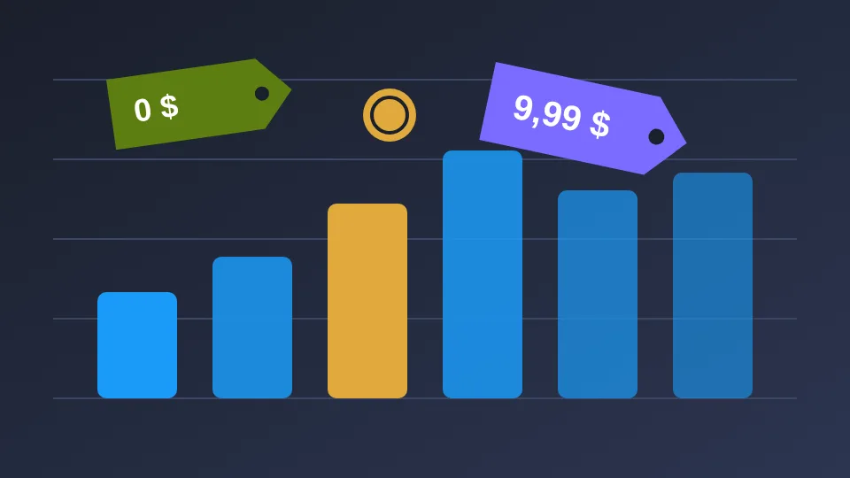

Как цена связана с отзывами
Представьте разработчика-одиночку, который выпускает игру в Steam. Сделать её бесплатной ради аудитории, взять пять долларов или рискнуть двадцатью? Рынок не даёт готового ответа, но данные показывают, как устроены цены вокруг. Медианная цена игр набора по годам держится у 5–7 долларов, а доля положительных отзывов в разных ценовых диапазонах отличается всего на несколько пунктов. Мы смотрим на это без прогнозов: сайт описывает выборку и не советует, какую цену ставить.

Ценовой диапазон и доля положительных отзывов
Вывод. Медианная доля положительных отзывов растёт от 79,6 % у бесплатных игр до 84,1 % в диапазоне 10–20 $, затем снижается до 81,5 % и 82,0 %. Разброс между диапазонами около 4,5 процентного пункта: он заметен, но невелик. Выборка стратифицирована по цене, поэтому число игр в диапазонах отражает метод отбора, а не структуру рынка.
Библиотека графиков не загрузилась, поэтому данные показаны только таблицей.
Данные графика в таблице
Три наблюдения для издателя
-
Бесплатные игры
Медианная доля положительных отзывов у бесплатных игр выборки — 79,6 %, самая низкая среди ценовых диапазонов. Среди жанров медиана 68,0 % у Massively Multiplayer, где медианная цена равна нулю.
-
Средний диапазон
Наибольшая медианная доля, 84,1 %, приходится на диапазон 10–20 $. В диапазонах 20–40 $ и от 40 $ она ниже: 81,5 % и 82,0 %.
-
Рост числа игр
Число игр набора с не менее чем 50 отзывами выросло с 398 в 2013 году до 1 098 в 2014-м и 4 232 в 2024-м. Медианная цена в 2014–2024 годах держится у 5–7 $.
Игры по годам выхода и жанрам
Эти графики построены по всем играм набора, прошедшим фильтры, а не по выборке в каталоге.
Вывод. Число игр с не менее чем 50 отзывами растёт: 398 игр 2013 года, 1 098 — 2014-го, 4 232 — 2024-го. Медианная доля положительных отзывов в 2015 году была 77,1 %, в 2024-м — 86,5 %. Рост числа игр отражает состав набора на март 2025 года, причины роста по этим данным определить нельзя.
Библиотека графиков не загрузилась, поэтому данные показаны только таблицей.
Данные графика в таблице
Вывод. Среди десяти самых крупных жанров медианная доля положительных отзывов колеблется от 79,0 до 83,7 %. Исключение — Massively Multiplayer: 68,0 %. Игра может относиться к нескольким жанрам сразу, поэтому сумма игр по жанрам больше общего числа. Самый крупный жанр — Indie, 17 070 игр.
Библиотека графиков не загрузилась, поэтому данные показаны только таблицей.
Данные графика в таблице
Что дальше
Узнайте, на каких платформах выходят игры и отличаются ли отзывы игр с русским языком и без него.